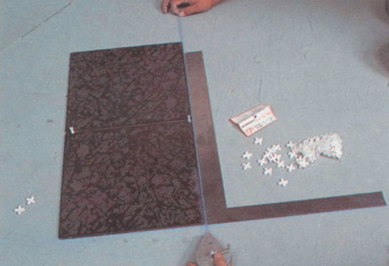
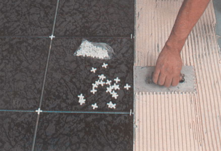
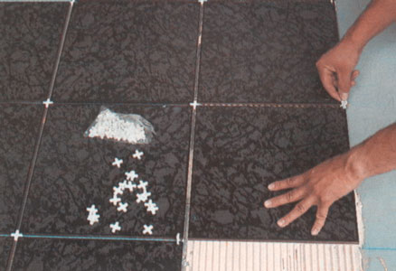
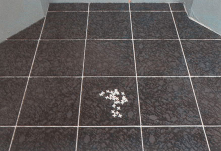

Instalação de Piso

Passo 1
Utilizando dois azulejos se elege a direção que o piso vai term usando 2 separadores de forma vertical para fixar a separação desejada (Neste caso se utilizou separador de 1⁄4").

Passo 2
Se marca a primeira linha da esquadria.

Passo 3
Se marca a segunda segunda linha da esquadria.

Passo 4
Se obtem a esquadria final.

Passo 5
Se espalha a argamassa usando uma espátula com ranhuras.

Passo 6
Se acomoda a peça seguinte a ser colocada, utilizando como guia o separador horizontal que esta entre as 2 peças vizinhas.

Passo 7
Se usa um separador em forma vertical para alinhar a parte superior direita da peça a colocar com a peça superior vizinha.

Passo 8
O separador vertical que tinha sido utilizado para alinhar uma peça anterior é empurrado de forma horizontal na intersecção das 3 peças que resulta na parte inferior esquerda da peça recém-instalado, deixando a preparação para a seguinte peça, e alinhando ao mesmo tempo a peça recém-instalado com a peça da esquerda.

Passo 9
Se faz uma pressaão final sobre a peça instalada e se prossegue com o passo 6, 7 e 8 até terminar de instalar.

Passo 10
Colocação final antes de colocar boquilha.

Passo 11
Despois de retirar os separadores se coloca boquilha conseguindo uma perfeita instalação. (Para separações de 1⁄8" ou mais se pode usar boquilha de cor com areia, a qual sella completamente e evita as rachaduras).